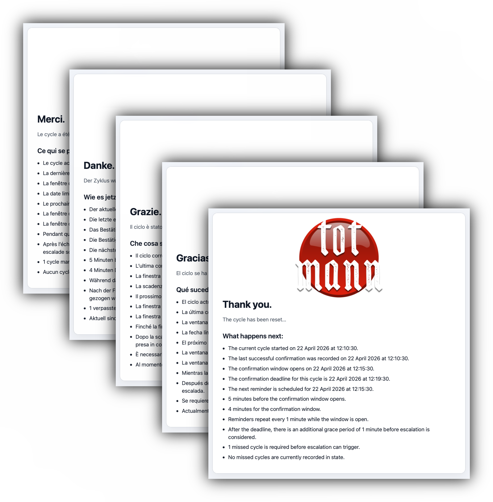

Granular timing
Control the reminder interval, confirmation window, grace period, missed-cycle threshold, and ACK follow-up timing.
A fully self-hosted dead man’s switch for email
totmann turns a private handover plan into a precise, self-hosted routine. It checks in on your schedule, waits through your configured safety windows, and sends recipient-specific messages and files only when confirmations stop for long enough.

Why totmann
Control the reminder interval, confirmation window, grace period, missed-cycle threshold, and ACK follow-up timing.
Prepare different messages for different recipients instead of sending one generic broadcast to everyone.
Confirmation, acknowledgment, and download URLs are HMAC-signed so important actions depend on valid tokens.
Deliver selected files from outside the public web root, bind download links to the intended file, and make links single-use when needed.
Use granular logs, the built-in check command, clear failure states, and operator warnings to see problems before they matter.
Keep the switch, recipient data, message content, and files on infrastructure you operate, without a service vendor in the middle.
Key features
Runs from your own PHP and mail environment, so the operational setup stays under your control.
Set the check-in schedule and escalation thresholds that fit your life, instead of adapting yourself to a fixed cadence.
Opening an email is not enough on its own. You make a deliberate confirmation, which helps prevent accidental resets.
Confirmation, acknowledgment, and recipient links are signed so unsuitable or accidental requests do not trigger the real action.
The system waits through your configured window and safety buffer before it treats silence as a real problem.
The contact scope is fixed in advance, so the system does not improvise when it matters.
Different recipients can receive the message content you prepared for them, instead of one shared generic note.
A recipient can confirm receipt so the same event does not keep generating unnecessary follow-up.
Optional private files can be included for selected recipients when they are part of the plan, without putting them in the public web tree.
Why it matters
Useful if selected people should receive prepared instructions only after you have stopped confirming for long enough to indicate a serious final event.
Useful if trusted people may need carefully prepared guidance for wallets, seed phrase locations, exchanges, or other crypto assets.
Useful if your family or executor may need a private overview of bank accounts, insurance contacts, regular payments, or financial paperwork.
Useful if important online accounts, domain names, servers, password-manager instructions, or other digital estate details must not disappear with you.
Useful if you want a separate, narrower setup for coma or long-term incapacity, without handing over everything meant only for the death case.
Useful if letters, account notes, contact lists, or private files should reach only the people you selected, and only when the switch actually fires.
How it works
totmann sends you a regular email asking you to confirm that you are still there.
As long as you confirm in time, the cycle resets and the prepared handover stays untouched.
If confirmations stop for long enough, totmann treats that as a real absence rather than a single missed moment.
The prepared recipient messages are sent individually, and extra follow-up can stop once receipt has been confirmed.
Summary
When your regular routine is working, totmann stays in the background instead of demanding constant attention.
The timing, recipient list, individual messages, and optional files are all decided in advance, before there is any urgency.
If totmann detects a setup or runtime problem, it can send a separate warning mail to your own address so you hear about it directly.
Detailed logs help you review what happened, and confirmation, ACK, and download links are protected with HMAC-based signing.
Escalation messages go out one by one, which keeps the handover clearer and more private than a shared blast.
Once receipt has been confirmed for an event, the additional follow-up can end cleanly.
Roadmap
An optional middle step could let trusted people step in before final escalation happens.
Future work may examine whether a more restricted shared-hosting mode is viable at all.
Planned ideas include richer mail priority controls and optional output-format choices.
A later browser-based management layer could make recipients and messages easier to maintain.
Further work may cover encrypted final messages and split-secret delivery models.
Longer-term ideas include alternative implementations, failover setups, and storage changes.